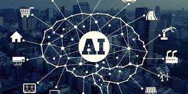

As business leaders and innovators race to reach the promise of artificial intelligence to deliver a competitive advantage as well as cost and time savings, the technology is altering industries from finance to manufacturing with new products, processes and capabilities.Companies such as 150-year-old Heineken are using AI, the vast amount of data they collect and the Internet of Things to drive marketing decisions and initiatives, improve operations and customer service. From managing global supply chains to optimising delivery routes, artificial intelligence is helping companies of all sizes and in all industries improve productivity and the bottom line at every stage of the business lifecycle from sourcing material to sales and accounting to customer service. It's allowing companies to design, produce and deliver products and service
